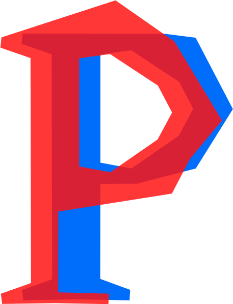

<ion-footer>
  <ion-toolbar>
    <ion-grid class="landingPage">
      <ion-row class="ion-align-items-center">
        <ion-col size="12" size-md="1">
          
        </ion-col>
        <ion-col size="12" size-md="5">
          <ion-text>
            <p>
              Das Projekt owlly wird unterstützt vom Prototype Fund, eine gemeinsame Initiative von Opendata.ch und des Programms „Digitalisierung +
              Gesellschaft“ der Stiftung Mercator Schweiz.
            </p>
          </ion-text>
        </ion-col>
        <ion-col size="12" size-md="6">
          <div class="ion-text-right" id="bureaucracy">
            <a href="/impressum" color="primary">Impressum</a>
            <p>© 2020 liitu gmbh</p>
          </div>
        </ion-col>
      </ion-row>
    </ion-grid>
  </ion-toolbar>
</ion-footer>
